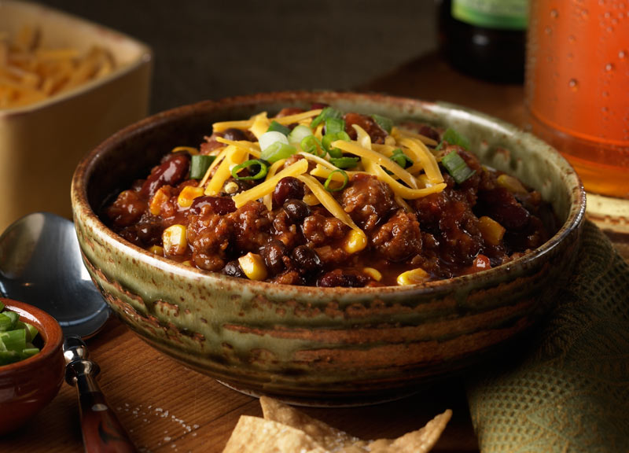

This website presents you the most tradtional finest Deep South cuisine you can ever find on earth!

The cuisine of the Southern United States developed in the former slave-holding states of the U.S., influenced by African, English, Scottish, Irish, French, and Native American cuisines. Tidewater, Appalachian, Creole, Lowcountry, and Floribbean are examples of types of Southern cuisine. In recent history, elements of Southern cuisine have spread north, having an effect on the development of other types of American cuisine.
We present you the most authentic southern recipes. You can find 150+ unique southern home cookings incorporated with various cooking techniques across all southern states.
Hey y'all! I'm Tina, the publisher and author of DeepSouthDish.com, an online blog about Southern cooking. I'm not a classically trained chef. I'm not a professional food stylist or photographer. I carry no food pedigree. I'm simply a home cook, just like you, who learns things through mistakes and trial and error, just like everybody else. I just happen to share those lessons by teaching what I do and sharing photos of what I make at a blog on the internet. My experience in the kitchen is built upon the same sentimental bones of memories that so many of yours are.